En esta parte del curso examinaremos algunos de los tipos más comunes de gráfico. Los organizaremos según el tipo de análisis que se desea realizar con ellos. Por ejemplo, si queremos saber si una variable cuantitativa afecta otra igual, realizamos un gráfico de dispersión o un correlograma. si el objetivo es saber la frecuencia de una variable categórica, un gráfico de barras puede ser la mejor opción.
Tipos de dato y tipos de gráficos
Cada tipo de gráfico suele corresponder a un tipo de dato o a una combinación entre tipos de dato. Por esa razón, resulta útil conocer la clasificación de los gráficos según los diferentes tipos de información para sacar los mejores resultados.
La página from Data to Viz resulta muy útil, pues ofrece una doble clasificación de los datos: por tipo de dato y el tipo de representación que se desea realizar. Recomiendo fuertemente que la estudiéis con detenimiento para tener una idea general de qué opciones tenéis. Luego, podréis regresar a la página para refrescar los conceptos y encontrar ejemplos, así como los códigos. Se trata de una herramienta muy útil a la hora de elegir el tipo de visualización que queremos para nuestros datos.
Distribución
Los gráficos de distribución son útiles para entender cómo se distribuyen los datos. ¿Cuál categoría es la más frecuente? ¿Los votos en un partido X en las mesas de Sevilla se encuentran concentrados alrededor de la media o varían mucho? Las visualizaciones de este apartado ayudan a responder a dichas preguntas. En este grupo se encuentran los histogramas, los gráficos de densidad, los diagramas de caja (boxplots) o los de violín (violin).
Gráficos de barras
El gráfico de barras es uno de los más comunes y útiles. Se utiliza para representar la frecuencia de una variable categórica. Por ejemplo, si queremos saber cuántos votos ha obtenido cada partido en una elección, un gráfico de barras es la mejor opción. Esto nos permite comparar los valores y sacar conclusiones y patrones a partir de ellos.
El código abajo crea un gráfico de barra para la variable pot_policy de la base de datos de los estados de EE. UU. La variable pot_policy representa la política relacionada a la legalización de la marijuana dominante en cada estado.
Además, para no aburrirnos, también vamos a crear un gráfico de barras polar. Este tipo de gráfico es útil cuando queremos comparar la frecuencia de una variable categórica en un círculo. En este caso, la variable pot_policy se encuentra en el eje x y el eje y representa la frecuencia de cada categoría. Como veréis, se trata del mismo gráfico. Lo único que cambia es el sistema de coordenadas.
Code
# Carga los datoslibrary(poliscidata)# Crea un data.frame d# con los datos de los estadosd <- states# reordena de modo decreciente de # la frecuenciad$pot_policy <-reorder( d$pot_policy, d$pot_policy, function(x) -length(x))#library(ggplot2)# 1) Crea la capa de datosp <-ggplot(data = d)# 2 ) Añade la capa de estéticap <- p +aes(x=pot_policy) # 3) Añade la capa de geometríap <- p +geom_bar()# Visualiza el gráficop
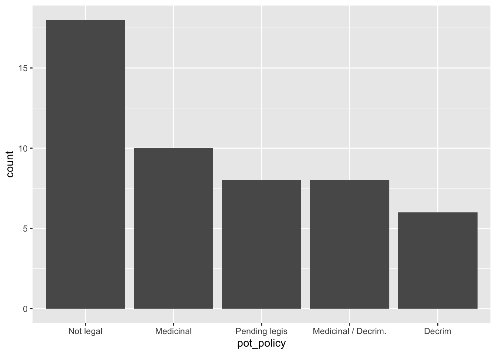
Code
# 4) Añade la capa de coordenadas # (en este caso polares)p +coord_polar()
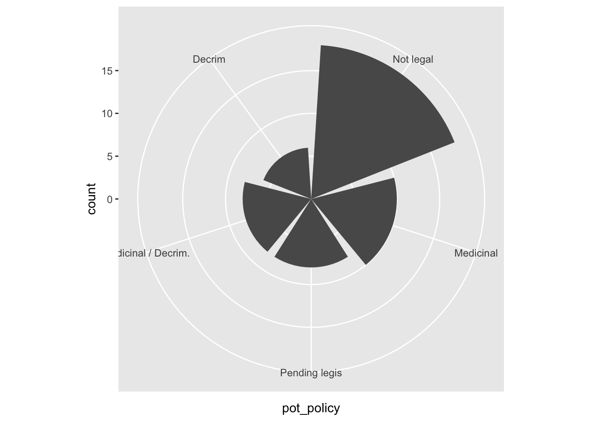
Histograma
El histograma es una visualización muy útil para entender la distribución de una variable cuantitativa. Se divide en intervalos que contienen el número de observaciones (en nuestro caso estados) con valores entre los límites de cada uno de ellos.
En el siguiente código, creamos un histograma para la variable pop2010 de la base de datos de los estados de EE. UU. La variable pop2010 representa la población de cada estado en el año 2010.
Code
library(ggplot2)# Crea el histograma para pop2010p <-ggplot(d, aes(pop2010))+# Adicional la geometría con 8 intervalosgeom_histogram(bins =8)# Visualizap
Como podemos ver, el patrón común de los datos de población se revela: muchos estados con poca población y unos pocos con mucha. Ese comportamiento suele pasar también en municipios, países, etc.
Densidad
El gráfico de densidad es similar al histograma, pero en lugar de contar el número de observaciones en un intervalo, muestra una curva que representa la densidad de probabilidad de la variable. En otras palabras, el área bajo la curva es igual a 1.
Code
library(ggplot2)# Crea el gráfico de densidad de pop2010p <-ggplot(d, aes(pop2010))+# Adiciona la geometría de densidadgeom_density()# Visualizap
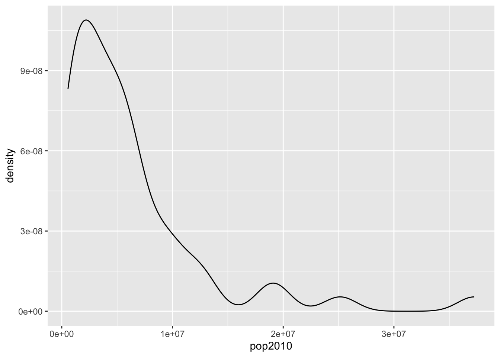
Como vemos, la curva de densidad nos muestra que la mayoría de los estados tienen una población baja, pero hay algunos con una población muy alta. Se trata de la misma información que en el histograma anterior, pero no hay cortes bruscos como los generados por los intervalos. Esa característica evita posibles distorsiones ocasionadas por la elección del número o del tamaño de los intervalos.
Boxplot
Otro gráfico de distribución muy útil es el boxplot. Este gráfico muestra la distribución de una variable cuantitativa a través de cinco estadísticas: el mínimo, el primer cuartil, la mediana, el tercer cuartil y el máximo. Además, también muestra los valores atípicos (outliers). Se emplea para analizar la dispersión y la simetría de los datos. Un diagrama donde las partes son simétricas y la caja resulta muy pequeña indica que los datos están muy concentrados alrededor de la mediana. Por otro lado, una caja grande y asimétrica indica que los datos están dispersos y que hay una mayor dispersión hacia los mayores o menores valores.
El gráfico abajo crea un boxplot para la variable que mide el porcentaje de desempleo (unemploy) en cada estado. Para añadir valor, elegimos agrupar los estados por región para saber si existe algún patrón territorial en la distribución del paro en EE. UU.
Los parámetros fill y group son necesarios para que el gráfico muestre una caja por cada región. En el primer caso, se atribuye un color a cada región y group se encarga de que cada región tenga su propia caja.
Code
p <-ggplot(data = d,mapping =aes(x=unemploy, y=region,fill=region,group=region)) +geom_boxplot(width=0.1)p
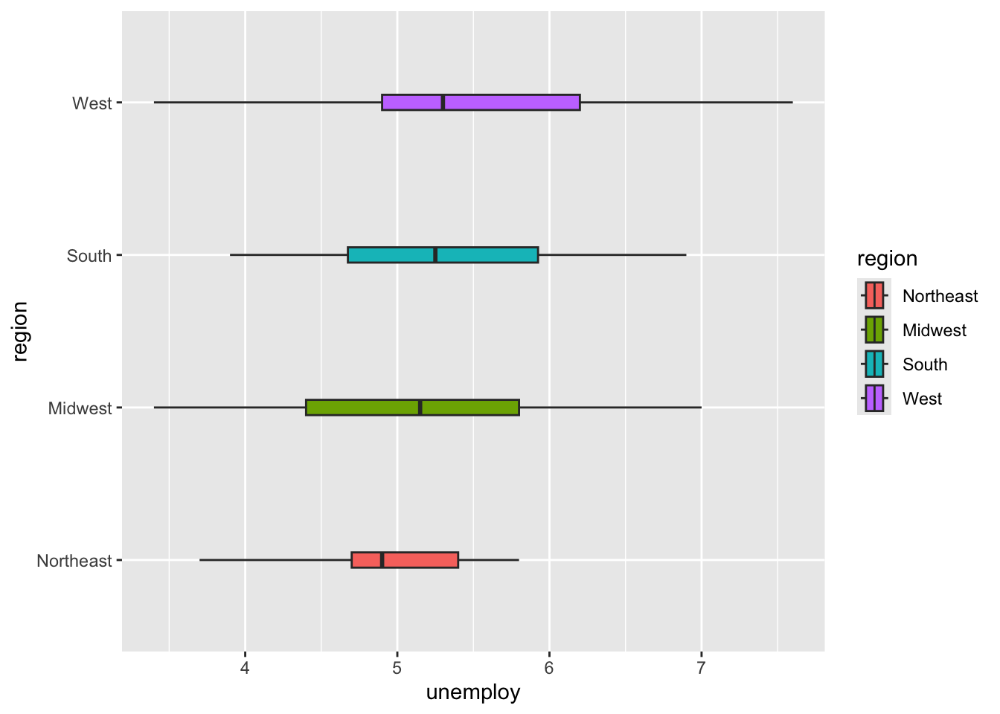
Vemos claramente dos patrones. De un lado, se encuentra el Oeste con estados con poco paro y otros con una tasa elevada. La dispersión resulta alta, tanto por los “bigotes” como por el tamaño de la caja. Además, los valores altos se encuentran más dispersos, pues la caja es más grande en la parte derecha. Por otro lado, el Noreste tiene una tasa de paro más concentrada, aunque la dispersión resulta mayor en la parte superior de la caja.
Violin plot
El violin plot es una combinación de un boxplot y un density plot. Muestra la distribución de una variable cuantitativa y la densidad de probabilidad de la misma. Es útil para comparar distribuciones entre diferentes grupos. En el siguiente gráfico, creamos un violin plot para la variable unemploy (tasa de paro) agrupada por región. Vemos que resulta muy parecido al boxplot anterior, pero con la ventaja de mostrar la densidad de probabilidad de la variable, es decir, dónde se concentran los valores. Aprovechamos para añadir los puntos de cada observación con geom_jitter. Así queda más fácil entender por qué el gráfico tiene la forma que tiene.
Code
p <-ggplot(data = d,mapping =aes(x=unemploy, y=region,group=region)) +geom_violin()+geom_jitter(aes(color=region))p
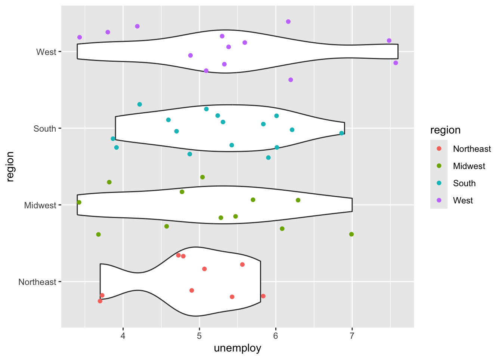
Lollipop
El gráfico de lollipop es una variante del gráfico de barras. En lugar de barras, se utilizan segmentos de línea para representar las frecuencias de las categorías. Es útil cuando se quiere resaltar una categoría en particular. En el siguiente gráfico, creamos un lollipop para la variable abort_rank3, que representa la clasificación de los estados según su legislación sobre el aborto.
Mientras que en los casos anteriores, cada gráfico tenía una sola geometría, en el lollipop se combinan dos: geom_point (punto) y geom_segment (segmento de línea). Esta estrategia resulta muy común en la creación de visualizaciones originales y personalizadas. Dominar la combinación entre geometrías puede ser muy útil para crear gráficos más complejos y atractivos.
Code
library(ggplot2)# Crea una tabla ordenada con los# valores de abort_rank3tb <-sort(table(d$abort_rank3))# La convierte en base de datos# para la función ggplottb <-data.frame(tb)# Crea el gráfico de lollipopp <-ggplot(tb, aes(y=Var1, x=Freq)) +# Añade los puntos rojosgeom_point(color="red") +# Añade los segmentosgeom_segment( aes(y=Var1, yend=Var1, x=0, xend=Freq))# Dibuja el gráficop
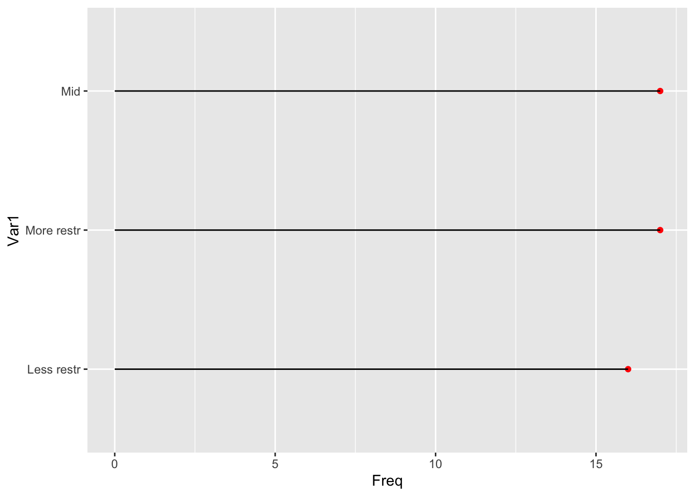
Treemap
Un treemap es un gráfico de proporciones representadas por áreas o rectángulos. Cuanto mayor sea el área, mayor será la frecuencia de una categoría dada (representada por un rectángulo). La principal ventaja de los treemaps es que permite representar datos jerárquicos. Por lo tanto, los grupos y subgrupos dentro de ellos pueden visualizarse fácilmente. Además, los treemaps permiten sintetizar muchos datos en un espacio relativamente pequeño.
Code
library(ggplot2)# Carga el paquete treemapifylibrary(treemapify)# Crea una tabla ordenada con# las políticas de control de# la marijuanatb <-sort(table(d$pot_policy))# Convierte en base de datostb <-data.frame(tb)# Crea el treemap usando la# geometría geom_treemap()# del paquete teemapify# Inicialmente, define# el gráfico con el área, color# y etiquetap <-ggplot(tb, aes(area = Freq, fill = Var1, label=Var1)) +# Añade la geometría de# treemap al gráficogeom_treemap()# Visualiza el resultadop
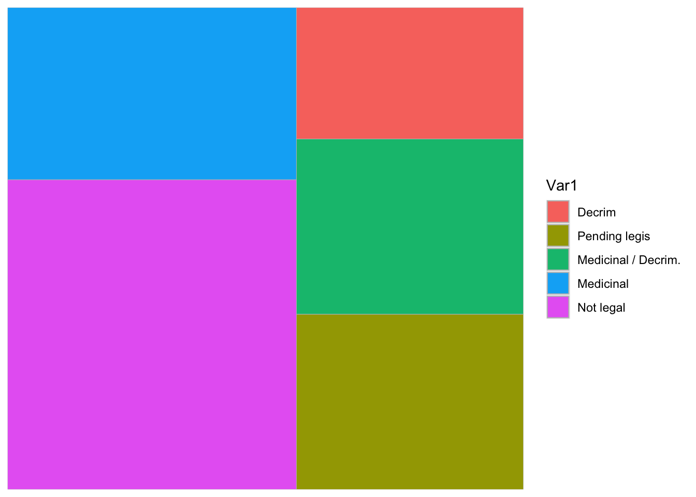
BeeSwarm
El gráfico de beeswarm es una variante del scatter plot que permite visualizar la distribución de una variable cuantitativa en función de una variable categórica. Es útil para comparar la distribución de una variable cuantitativa entre diferentes grupos. En el siguiente gráfico, creamos un beeswarm para la variable pop_65_older (población de 65 años o más) agrupada por el nivel de democracia de los países. Además, añadimos el color según la religión de los países.
Como vemos, también se parece mucho al violin plot anterior. Sin embargo, el beeswarm tiene la ventaja de mostrar cada observación individual, lo que puede ser útil para detectar patrones o valores atípicos. Además, resulta más atractivo visualmente, pues los puntos no se superponen y se distribuyen de forma más uniforme. En este caso, añadimos la religión como información adicional para intentar encontrar algún patrón en los datos.
Code
w <- world# Carga los paquetes necesarioslibrary(ggplot2) library(ggbeeswarm) # Crea el gráfico con el nivel de democracia# y la población de 65 años o más# con color según la religiónp <-ggplot(data = w,mapping =aes(x=dem_level4, y=pop_65_older, color=religoin)) # Añadimos la geometría: geom_quasirandom()p <- p +geom_quasirandom(size=1.5)# Visualizamos los resultadosp
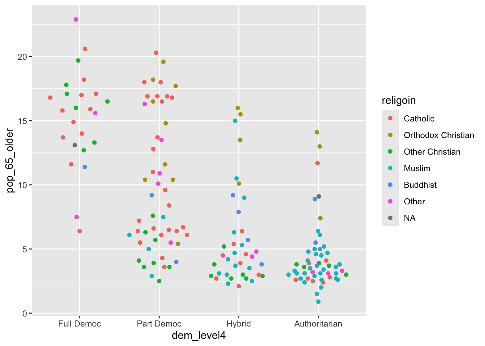
Como vemos, las poblaciones de las democracias plenas presentan una mayor proporción de personas de 65 años o más. La autocracia, por otro lado, presenta una población más joven. Además, parece que la religión predominantes en los países con mayor proporción de personas de 65 años y más democráticos es el cristianismo, mientras que los más jóvenes y autoritarios son en su mayor parte de mayoría musulmana.
Ridge Plot
El gráfico de ridge es una variante del density plot que permite visualizar la distribución de una variable cuantitativa en función de una variable categórica. Es útil para comparar la distribución de una variable cuantitativa entre diferentes grupos. En el siguiente gráfico, creamos un ridge para la variable frac_eth (fracción de etnias) agrupada por la religión de los países.
Code
# Carga los paqueteslibrary(ggplot2)library(ggridges)# Crea el gráfico# con la relación entre # fraccionamiento étnico y religiónp <-ggplot(w,aes(x=frac_eth, y=religoin, fill=religoin))# Añade la capa de geometríap <- p +geom_density_ridges()# Visualiza los resultadosp
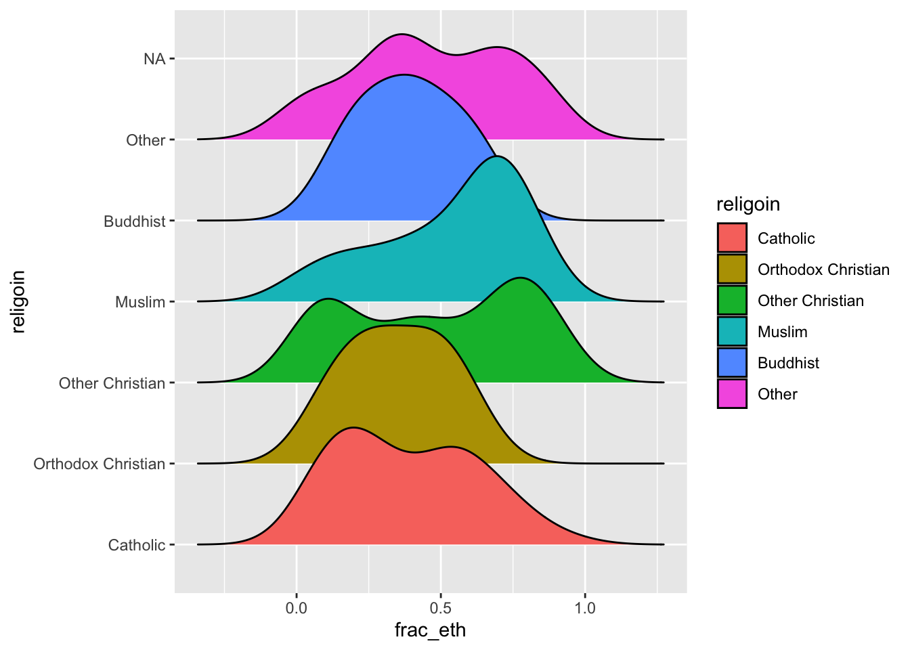
Como vemos, la distribución de la fracción étnica varía según la religión predominante en los países. Los países con mayoría musulmana presentan una mayor fracción étnica, mientras que los países con mayoría católica presentan una menor fracción étnica. Además, los países con mayoría musulmana presentan una distribución más dispersa, mientras que los países con mayoría budista presentan una distribución más concentrada. La categoría “otros cristianos” presenta una distribución más dispersa, con dos picos.
Raincloud Chart
El gráfico de raincloud resulta muy divertido. Combina un violin plot, un box plot y un scatter plot en un solo gráfico. Se llama así, porque las curvas de densidad se asemejan a nubes y los puntos dispersos representados abajo parecen gotas de lluvia. Como en versiones anteriores que hemos elaborado más arriba, tenemos una representación sintética (una curva que describe la densidad o el comportamiento de los datos) y unos puntos que representa la posición aproximada de cada observación. En el siguiente gráfico, creamos un raincloud para la variable pop_65_older (población de 65 años o más) agrupada por el nivel de democracia de los países.
Code
# Carga los paqueteslibrary(ggplot2)library(ggridges)# Creamos el gráfico, los datos son w, y las# variables: y=dem_level4 y x=pop_65_older,# el color es fill=dem_level4p <-ggplot(w,aes(y = dem_level4, x = pop_65_older, fill = dem_level4)) # Ahora adiciona la geometría, # que incorpora los pujntos y# las líneas que identifica los# cuartilesp <- p +geom_density_ridges(jittered_points =TRUE,position ="raincloud",alpha=0.6, quantile_lines =TRUE)# Visualiza el resultadop
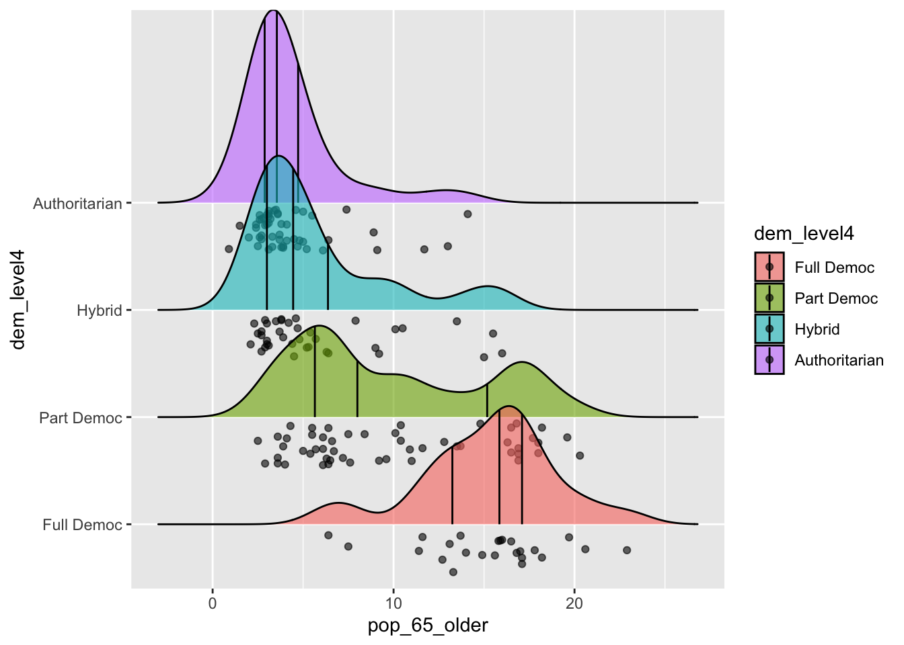
Asociación o correlación
Los gráficos de asociación o correlación son útiles para visualizar la relación entre dos o más variables cuantitativas. Nos ayudan a identificar los vínculos entre fenómenos medidos de forma continua y formular hipótesis sobre su relación.
Diagrama de dispersión
Un diagrama de dispersión o scatterplot es una de las formas más sencillas y efectivas de visualizar la relación entre dos variables cuantitativas. Cada punto en el gráfico representa una observación y su posición en los ejes x e y indica los valores de las dos variables. Resulta tan común que su interpretación es bastante intuitiva. Permite, además, que añadamos dos o tres variables más, como el color, el tamaño o la forma de los puntos, para representar información adicional.
En el siguiente ejemplo, creamos un diagrama de dispersión para visualizar la relación entre la variable hdi (índice de desarrollo humano) y la variable dem_score14 (puntuación de democracia). Además, coloreamos los puntos según la religión mayoritaria (religoin), cada continente (regionun) estará representado por una forma distinta y definiremos el tamaño empleando el porcentaje de personas con 65 años o más (pop_65_older).
Code
library(ggplot2)# Crea el gráficop <-ggplot(w)# Capa estética con la religión# como colorp <- p+aes(x=hdi, y=dem_score14,color=religoin,size=pop_65_older,shape=regionun)# Capa geométricap <- p +geom_point()# Visualiza el gráficop
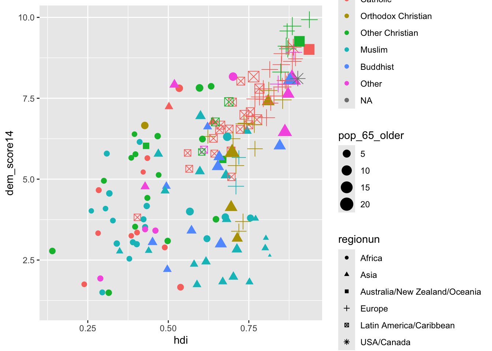
Tenemos un gráfico verdaderamente horrible. No obstante, solo quería demostraros que es posible añadir más de dos variables a un diagrama de dispersión. En este caso, tenemos cinco: desarrollo humano, democracia, continente, religión y porcentaje de personas mayores de 65 años. Aunque se pueda hacer, como habéis visto, ni siempre es recomendable o útil. En este caso, la visualización resulta confusa y poco informativa. Por tanto, es mejor limitar el número de variables a dos o tres para que el gráfico sea más fácil de interpretar:
Code
library(ggplot2)# Crea el gráficop <-ggplot(w)# Capa estética con la religión# como colorp <- p+aes(x=hdi, y=dem_score14,color=religoin)# Capa geométricap <- p +geom_point()# Visualiza el gráficop
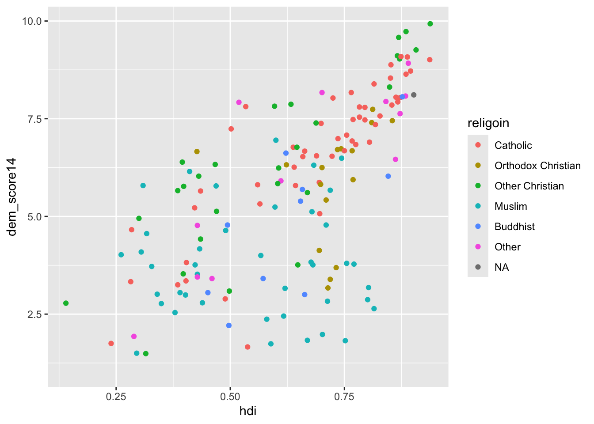
Correlograma
¿Qué pasa cuando queremos comparar el grado de asociación entre muchas variables cuantitativas de una sola vez? En este caso, el correlograma es una herramienta muy útil. Un correlograma es una matriz en la que cada celda representa el coeficiente de correlación entre dos variables. Los valores de la correlación pueden variar entre -1 y 1. Un valor de 1 indica una correlación positiva perfecta, un valor de -1 indica una correlación negativa perfecta y un valor de 0 indica que no hay correlación entre las variables. Los correlogramas son útiles para identificar patrones de correlación entre variables y seleccionar las variables más relevantes para un análisis más detallado.
En el siguiente ejemplo, creamos un correlograma para visualizar la correlación entre las variables gini10, dem_score14, literacy, lifeex_total, hdi, pop_urban, frac_eth y gdppcap08.
Code
# Carga el paquete necesariolibrary(ggcorrplot)# Crea una lista de variables# de interésvar <-c("gini10","dem_score14","literacy","lifeex_total","hdi","pop_urban","frac_eth","gdppcap08")# Calcula la matriz de correlacióncorr <-round(cor(w[,var], use="pairwise.complete.obs"), 3)# Visualiza los resultadosggcorrplot(corr, lab_size =3,show.diag = F,hc.order = T,lab=T)
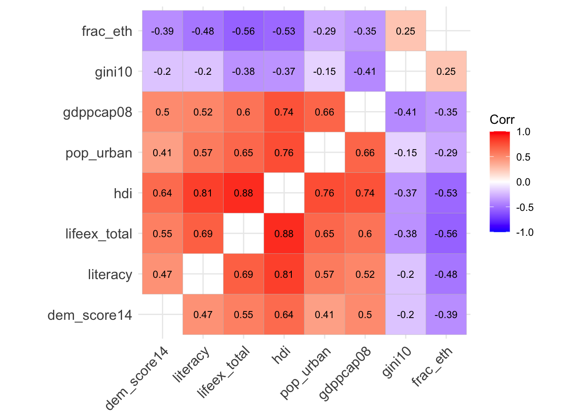
El patrón que emerge resulta claro: el fraccionamiento étnico (frac_eth) y el índice de desigualdad de renta (gini10) están negativamente correlacionados con todas las demás variables (que presentan una asociación positiva). Es decir, la fraccionalización étnica y la desigualdad no “casan” muy bien con la riqueza (gdppcap08), la urbanización (pop_urban), el desarrollo humano (hdi), la esperanza de vida (lifeex_total), la alfabetización (literacy) o la democracia (dem_score14).
Conexión
Los gráficos de conexión son útiles para visualizar datos de red. Nos permiten representar las relaciones entre diferentes entidades (nodos) y las interacciones entre ellas (vínculos). Los gráficos de conexión son útiles para visualizar flujos de información, rutas de transporte, relaciones comerciales, interpersonales, etc.
Red
Un gráfico de red o sociograma es una representación visual de una red social. Se compone de dos unidades básicas: los nodos (o vértices) y los vínculos (o aristas). Los nodos son los puntos de la red y pueden representar a individuos, organizaciones, países, ciudades, etc. Los vínculos son las conexiones entre ellos y pueden señalar relaciones de amistad, colaboración, intercambio. Puede ser una red de ciudades, de empresas, de personas, de páginas web, entre muchos otras aplicaciones.
En el siguiente ejemplo, creamos un gráfico de red para visualizar los flujos de visitas de la presidenta Dilma Rousseff entre diferentes ciudades de Brasil durante el mes anterior a las elecciónes presidenciales de 2014. La base de datos contiene información sobre el número de visitas entre diferentes ciudades, así como el número total de viajes realizados. Se ha obtenido a partir del análisis de los periódicos que cubrieron la campaña electoral.
Code
# Abre la base de datosdi <-read.delim("https://www.dropbox.com/s/r8309gzg3rymajr/Visitas_Dilma_redux.csv?dl=1", sep=";", dec=",")# Seleccoiona las variablesdi <-unique(di[,c("NOM_O","NOM_D","FREQ","VISITS")])names(di) <-c("Origen","Destino","Viajes","Visitas")# Carga los paqueteslibrary(ggplot2)library(ggnetwork)# Convierte la base de datos# en un layout de redn <-ggnetwork(di)# Crea el gráfico con las# capas de datos y estéticap <-ggplot(n, aes(x = x, y = y, xend = xend, yend = yend))# Añade la capa de vínculos (aristas)p <- p +geom_edges(aes(size=Viajes),color ="red3", alpha=0.1, curvature =0.25) # Ahora, añade los puntos (nodos)# a la red anteriorp <- p +geom_nodes(aes(size=Visitas), color="red3")# Adiciona los nombres de las ciudadesp <- p +geom_nodetext_repel(aes(label = vertex.names))# Elimina el tema y la leyendap <- p +theme_blank() +theme(legend.position ="none")# Visualiza los resultadosp
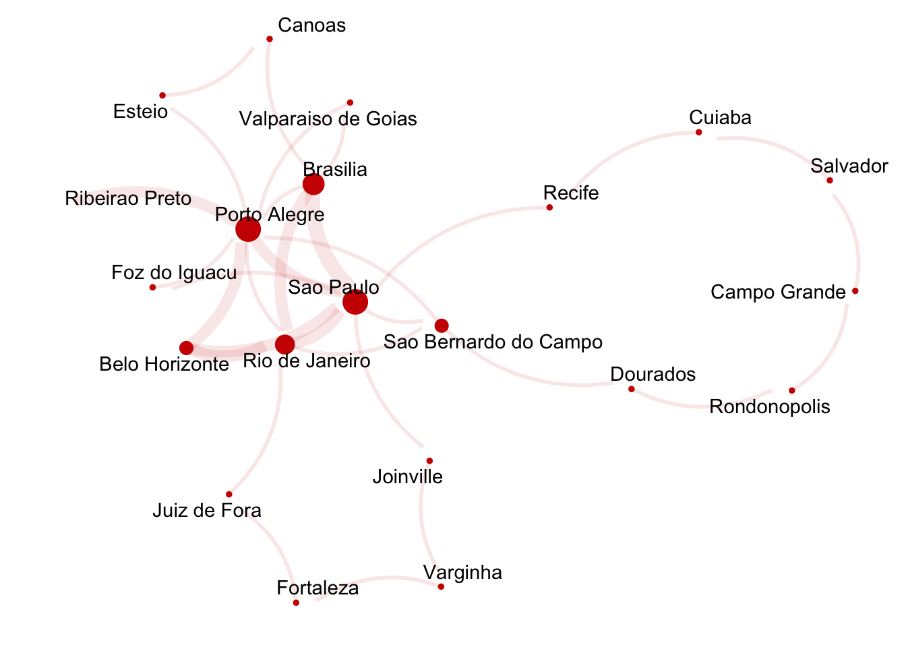
Se observa que la candidata se desplaza principalmente entre las ciudades de São Paulo, Brasília, Río de Janeiro y Porto Alegre. Los constantes regresos a Brasília revelan la necesidad de conciliar las agendas de candidata con la de presidenta. Río y São Paulo, por su parte, son los principales centros económicos y políticos del país, mientras que Porto Alegre es la ciudad natal de la candidata. Vemos también que ha visitado otras ciudades, pero estas ocupan un lugar más periférico en la red.
Tiempo / Flujo / Evolución
Los gráficos de tiempo o flujo son útiles para visualizar la evolución de una variable a lo largo del tiempo. Nos permiten identificar tendencias, patrones y ciclos en los datos. Entre las aplicaciones posibles encontramos las series temporales, flujos de información, movimientos de población, entre otros.
Prepara la base de Brasil
Code
Year <-c(1985:2019)Gini <-c(55.6,58.5,59.7,61.4,63.3,60.5,60.3,60.2,60.1,59.9,59.6,59.9,59.8,59.6,59.0,58.7,58.4,58.1,57.6,56.5,56.3,55.6,54.9,54.0,53.7,53.3,52.9,53.4,52.7,52.0,51.9,53.3,53.3,53.9,53.5)Administration <-c("Sarney","Sarney","Sarney","Sarney","Sarney","Collor","Collor","Collor","Itamar","Itamar","FHC","FHC","FHC","FHC","FHC","FHC","FHC","FHC","Lula","Lula","Lula","Lula","Lula","Lula","Lula","Lula","Dilma","Dilma","Dilma","Dilma","Dilma","Dilma","Temer","Temer","Bolsonaro")Growth <-c(7.9,7.5,3.5,-0.1,3.2,-4.4,1.0,-0.5,4.9,5.9,4.2,2.2,3.4,0.3,0.5,4.4,1.4,3.1,1.1,5.8,3.2,4.0,6.1,5.1,-0.1,7.5,4.0,1.9,3.0,0.5,-3.5,-3.3,1.3,1.8,1.2)GDP <-c(836,898,930,930,959,917,927,922,967,1024,1067,1090,1127,1131,1137,1186,1203,1240,1254,1326,1368,1423,1509,1586,1584,1703,1771,1805,1859,1868,1802,1743,1766,1798,1820)br <-data.frame(Year=Year, GDP=GDP, Growth=Growth, Gini=Gini, Administration=Administration)brs <-data.frame()for(i in1:nrow(br)){if (i<nrow(br)){ k <- i+1 }else{ k <- i } brs <-rbind(brs,data.frame(x1=br$Year[i],xend=br$Year[k],y1=br$Gini[i],yend=br$Gini[k],Administration=br$Administration[i]) )}brs2 <-data.frame()for(i in1:nrow(br)){if (i<nrow(br)){ k <- i+1 }else{ k <- i } brs2 <-rbind(brs2,data.frame(x1=br$GDP[i],xend=br$GDP[k],y1=br$Gini[i],yend=br$Gini[k],Administration=br$Administration[i],Year=Year[i]) )}
Línea
El gráfico de líneas es una de las formas más comunes de visualizar datos temporales. Se compone de dos ejes: el eje horizontal representa el tiempo y el eje vertical la variable de interés. Se utiliza para visualizar la evolución de una variable a lo largo del tiempo, identificar tendencias, patrones y ciclos.
El código abajo muestra cómo crear un gráfico de líneas para visualizar la evolución del índice de desigualdad de renta en Brasil entre 1985 y 2019. La base de datos contiene información sobre el índice de Gini en Brasil, así como el año correspondiente. Se ha obtenido a partir de la base de datos del Banco Mundial.
Code
# Prepara el gráficop <-ggplot(br, aes(x=Year, y=Gini))+geom_line()# Visualiza los resultadosp
Connected scatterplot
El gráfico de dispersión conectado es una variante del gráfico de líneas que permite visualizar la relación entre dos variables a lo largo del tiempo. Se trata de conectar los puntos por medio de segmentos de línea para resaltar la evolución de la variable en el tiempo. El gráfico abajo muestra la evolución de la desigualdad en Brasil entre 1985 y 2019, pero ahora, marca los cambios de gobierno en el país.
Code
# Carga los paqueteslibrary(ggplot2)library(ggrepel)# Crea el gráficop <-ggplot(brs, aes(x=Year, y=Gini,fill=Administration))# Añade segmentos de línea para# cada gobiernop <- p +geom_segment(aes(x=x1,xend=xend,y=y1,yend=yend,color=Administration))# Visualiza los resultadosp
Area
El gráfico de área es una variante del gráfico de líneas que rellena el área entre la línea y el eje horizontal. El cambio puede parecer insignificante, pero posibilita la percepción de cambios importantes en volúmenes. En el ejemplo abajo, se muestra la evolución del crecimiento económico en Brasil entre 1985 y 2019.
Code
# Carga los paqueteslibrary(ggplot2)# Prepara el gráficop <-ggplot(br, aes(y=Growth, x=Year))+geom_area(fill="darkgreen")# Visualiza los resultadosp
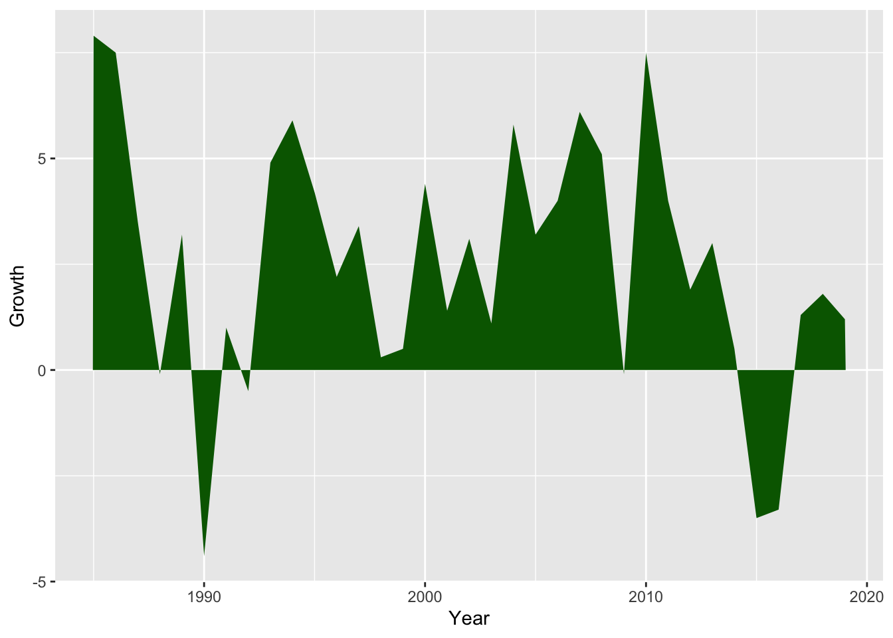
Dumbbell
El gráfico de pesas rusas (dumbbell) es una variante del gráfico de líneas que permite visualizar la evolución de dos variables a lo largo del tiempo. Se compone de dos o más puntos conectados por un segmento de línea. Es útil para comparar dos valores en diferentes momentos y visualizar la evolución de la variable en el tiempo. El gráfico abajo muestra la evolución de la proporción de la riqueza concentrada por el 10% más rico de en los países de América Latina en 2000, 2010 y 2019.
# Carga los paqueteslibrary(ggplot2)# Obtiene el orden de los países según# la proporción de riqueza apropiada por# los 10% más ricos (de los más a los menos).levels <- lat[order( lat$Share[lat$Year==2000], decreasing = T),c("Country")]# Reordena la base de datos según los niveles# obtenidos en 2000 (esto es importante para que el # gráfico salga bonito y fácil de interpretar)lat$Country <-factor(lat$Country, levels=levels)# Genera el gráficop <-ggplot(lat,aes(y=Country, x=Share))# Adiciona los segmentos de línea# conectando cada períodop <- p +geom_line(color="grey85")# Añade puntos y los colorea de# acuerdo al año (Year)p <- p +geom_point(aes(color=Year))# Visualiza los resultadosp
Se observa que la mayoría de los países han experimentado una reducción en la concentración de la riqueza en manos del 10% más rico, con excepción de Costa Rica, que ha experimentado un aumento en el mismo período. Resulta notable el caso de Bolivia, que ha experimentado una reducción significativa en la concentración de la riqueza en manos del 10% más rico en el período analizado, que pasa de ser el país más desigual al quinto menos desigual en la región en 2020.
Espacio
Los gráficos espaciales son útiles para visualizar la distribución geográfica de una variable. Nos permiten identificar patrones, tendencias y relaciones espaciales en los datos. Entre las aplicaciones posibles encontramos la distribución de la población, la concentración de la riqueza, la distribución de la pobreza, entre otros.
Mapa de coropletas
Un mapa de coropletas es una forma de visualización espacial que consiste en colorear áreas geográficas de acuerdo a una variable de interés. Es útil para visualizar la distribución geográfica de una variable y compararla entre diferentes áreas. En el ejemplo abajo, se muestra la distribución de los condados de Carolina del Norte según su área. Los condados más grandes se muestran en tonos más oscuros, mientras que los más pequeños aparecen más claros.
Code
# Carga los paqueteslibrary(ggthemes)library(ggplot2)library(sf)# Carga los datos de# los condados de Carolina # del Nortenc <-st_read(system.file("shape/nc.shp", package ="sf"), quiet =TRUE)# Crea el gráfico y lo colorea# según el áreagg <-ggplot(nc) +geom_sf(aes(fill = AREA))# Visualiza los resultados gg